För att spara tid när du skriver in programkommandon tillåter C-64an att du förkortar de flesta ord. Förkortningen för PRINT är ett frågetecken. Förkortningen för de övriga orden görs genom att skriva första eller de två första tecknen i ordet och sedan hålla SHIFT nedtryckt medan du trycker nästa tecken. När förkortningen används i programmet kommer den att skrivas ut i sin längre form när programmet listas. Notera att en del ord innehåller första parantesen, andra gör det inte.
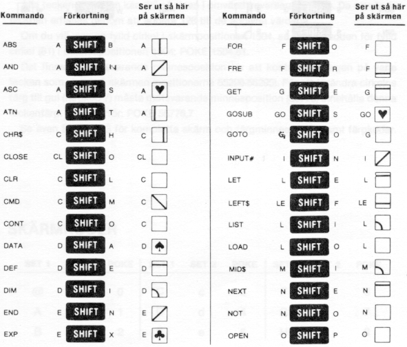
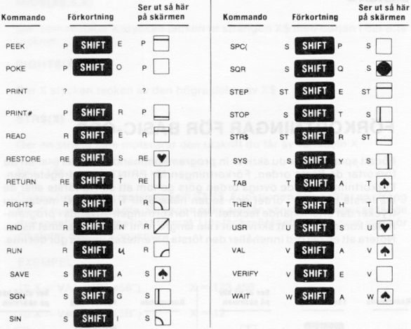
Det finns två uppsättningar med tecken, men du kan bara använda en i taget. Med detta menas att tecken från den ena uppsättningen inte kan visas samtidigt som tecken från den andra. Du byter teckenuppsättning genom att hålla skift nedtryckt och trycka på C=-tangenten.
Från BASIC kan du ändra teckensats med POKE-kommando. POKE 53272,29 ändrar till stora bokstäver och grafik. POKE 53272,31 ändrar till små och stora bokstäver (gemener och VERSALER).
Alla tecken i tabellen kan också visas i omvänd form (reverse mode). De omvända tecknen erhålles genom att addera 128 till de angivna värdena.
Om du vill visa en fylld cirkel i skärmpositionen 1504, så lägg in koden för fylld cirkel (81) i minnespositionen 1504: POKE 1504,81.
Det finns en motsvarande minnesposition för att kontrollera färgen på varje tecken som visas på skrämen (positionerna 55296-56295). För att förändra cirkelns färg till gul (färgkod 7) måste motsvarande minnesposition (55776) innehålla denna teckenfärg. Skriv därför: POKE 55776,7
Se även BILAGA G för kompletta skärm- och färgminneskartor samt färgkoder.
SKÄRMKODER
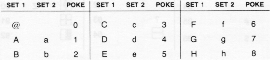
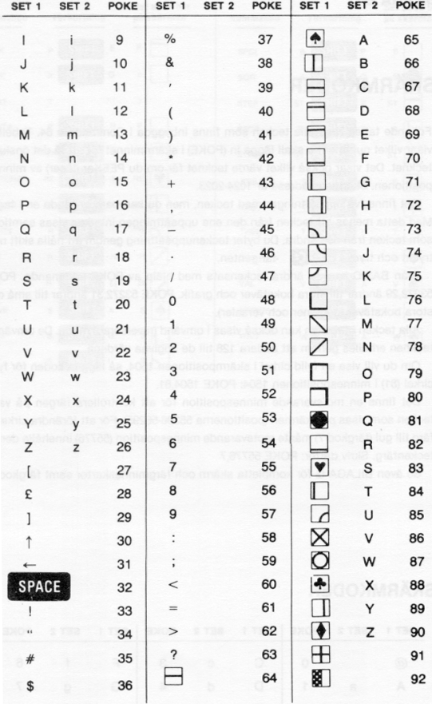
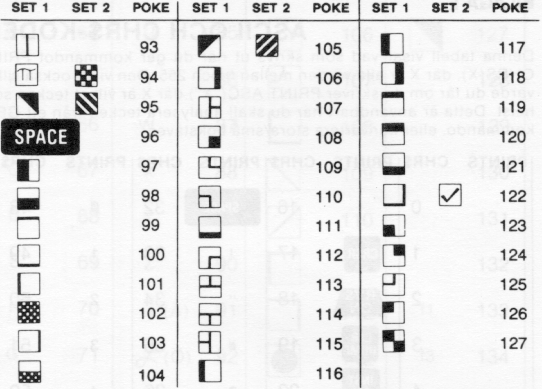
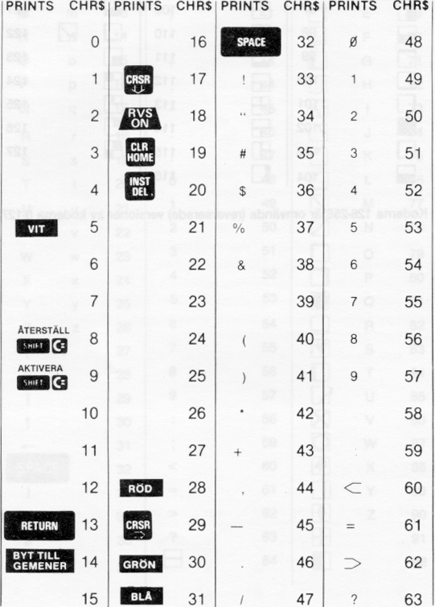
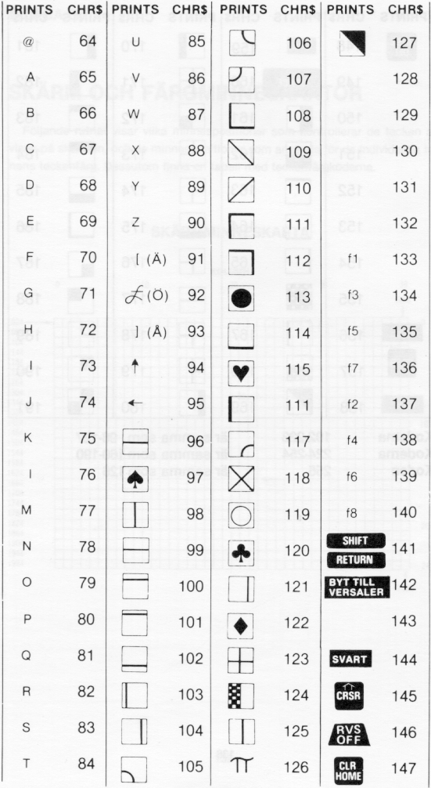
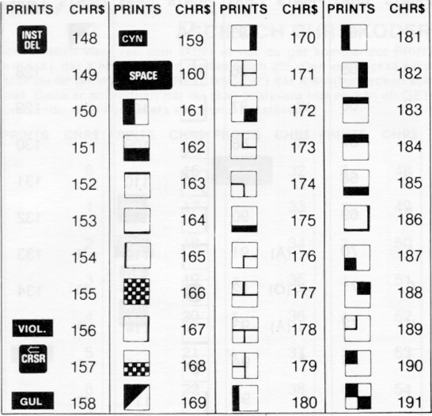
Följande rutnät visar vilka minnespositioner som kontrollerar de tecken som visas på skärmen, och de minnespositioner som används för de individuella tecknens teckenfärg. Dessutom finns en tabell med teckenfärgkoderna.
SKÄRMMINNESKARTA
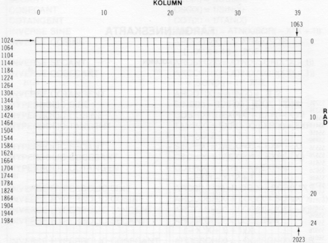
De värden som används för att POKEa i färgminnespositionerna för att ändra ett teckens färg är:
| 0 | SVART | 8 | ORANGE |
| 1 | VIT | 9 | BRUN |
| 2 | RÖD | 10 | LJUS RÖD |
| 3 | CYAN | 11 | GRÅ 1 |
| 4 | PURPUR | 12 | GRÅ 2 |
| 5 | GRÖN | 13 | LJUS GRÖN |
| 6 | BLÅ | 14 | LJUSBLÅ |
| 7 | GUL | 15 | GRÅ 3 |
För att som exempel ändra färgen på tecken, placerat i skärmens övre vänstra hörn, till rött, skriv: POKE 55296,2
FÄRGMINNESKARTA
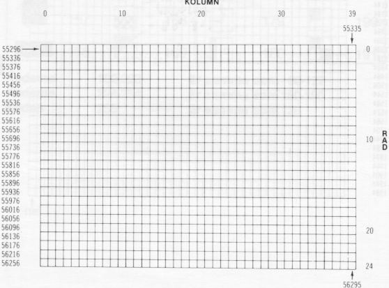
Funktioner som inte innefattas i Commodore 64 BASIC kan beräknas på följande sätt:
| FUNKTION | C-64 BASIC MOTSVARANDE |
|---|---|
| SECANT | SEC(X)=1/COS(X) |
| COSECANT | CSC(X)=1/SIN(X) |
| COTANGENT | COT(X)=1/TAN(X) |
| INVERSE SINE | ARCSIN(X)=ATN(X/SQR(-X*X+1)) |
| INVERSE COSINE | ARCCOS(X)=-ATN(X/SQR(-X*X+1))+{pi}/2 |
| INVERSE SECANT | ARCSEC(X)=ATN(X/SQR(X*X-1)) |
| INVERSE COSECANT | ARCCSC(X)=ATN(X/SQR(X*X-1))+(SGN(X)-1*{pi}/2 |
| INVERSE COTANGENT | ARCOT(X)=ATN(X)+{pi}/2 |
| HYPERBOLIC SINE | SINH(X)=(EXP(X)-EXP(-X))/2 |
| HYPERBOLIC COSINE | COSH(X)=(EXP(X)+EXP(-X))/2 |
| HYPERBOLIC TANGENT | TANH(X)=EXP(-X)/(EXP(X)+EXP(-X))*2+1 |
| HYPERBOLIC SECANT | SECH(X)=2/(EXP(X)+EXP(-X)) |
| HYPERBOLIC COSECANT | CSCH(X)=2/(EXP(X)-EXP(-X)) |
| HYPERBOLIC COTANGENT | COTH(X)=EXP(-X)/(EXP(X)-EXP(-X))*2+1 |
| INVERSE HYPERBOLIC SINE | ARCSINH(X)=LOG(X+SQR(X*X+1)) |
| INVERSE HYPERBOLIC COSINE | ARCCOSH(X)=LOG(X+SQR(X*X-1)) |
| INVERSE HYPERBOLIC TANGENT | ARCTANH(X)=LOG((1+X)/(1-X))/2 |
| INVERSE HYPERBOLIC SECANT | ARCSECH(X)=LOG((SQR(-X*X+1)+1/X) |
| INVERSE HYPERBOLIC COSECANT | ARCCSCH(X)=LOG((SGN(X)*SQR(X*X+1/X) |
| INVERSE HYPERBOLIC COTANGENT | ARCCOTH(X)=LOG((X+1)/(X-1))/2 |
Denna bilaga är gjord för att visa vilka anslutningar som kan göras till Commodore 64.
| Stift | Typ | Anm. |
|---|---|---|
| 1 | JOYA0 | |
| 2 | JOYA1 | |
| 3 | JOYA2 | |
| 4 | JOYA3 | |
| 5 | POT AY | |
| 6 | KNAPP A/LJUSPENNA | |
| 7 | +5V | Max. 50mA |
| 8 | GND | |
| 9 | POT AX |
| Stift | Typ | Anm. |
|---|---|---|
| 1 | JOYB0 | |
| 2 | JOYB1 | |
| 3 | JOYB2 | |
| 4 | JOYB3 | |
| 5 | POT BY | |
| 6 | KNAPP B | |
| 7 | +5V | Max. 50mA |
| 8 | GND | |
| 9 | POT BX |
| Stift | Type | Stift | Typ |
|---|---|---|---|
| 12 | BA | 1 | GND |
| 13 | /DMA | 2 | +5V |
| 14 | D7 | 3 | +5V |
| 15 | D6 | 4 | /IRQ |
| 16 | D5 | 5 | R/W |
| 17 | D4 | 6 | Dot Clock |
| 18 | D3 | 7 | I/O1 |
| 19 | D2 | 8 | /GAME |
| 20 | D1 | 9 | /EXROM |
| 21 | D0 | 10 | I/O2 |
| 22 | GND | 11 | /ROML |
| Stift | Typ | Stift | Typ |
| N | A9 | A | GND |
| P | A8 | B | /ROMH |
| R | A7 | C | /RESET |
| S | A6 | D | /NMI |
| T | A5 | E | 02 |
| U | A4 | F | A15 |
| V | A3 | H | A14 |
| W | A2 | J | A13 |
| X | A1 | K | A12 |
| Y | A0 | L | A11 |
| Z | GND | M | A10 |
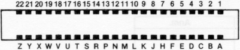 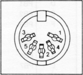
| Stift | Type | Anm. |
|---|---|---|
| 1 | LUMINANS | |
| 2 | GND | |
| 3 | AUDIO UT | |
| 4 | VIDEO UT | |
| 5 | AUDIO IN |
| Stift | Typ |
|---|---|
| 1 | SERIAL /SRQIN |
| 2 | GND |
| 3 | SERIAL ATN OUT |
| 4 | SERIAL CLK IN/OUT |
| 5 | SERIAL DATA IN/OUT |
| 6 | /RESET |
| Stift | Typ |
|---|---|
| A-1 | GND |
| B-2 | +5V |
| C-3 | Kassettmotor |
| D-4 | Kassett READ |
| E-5 | Kassett WRITE |
| F-6 | Kassett SENSE |
| 1 | GND | |
| 2 | +5V | MAX. 100 mA |
| 3 | /RESET | |
| 4 | CNT1 | |
| 5 | SP1 | |
| 6 | CNT2 | |
| 7 | SP2 | |
| 8 | /PC2 | |
| 9 | SER. ATN IN | |
| 10 | 9 VAC | MAX. 100 mA |
| 11 | 9 VAC | MAX. 100 mA |
| 12 | GND | |
| Stift | Typ | Anm. |
|---|---|---|
| A | GND | |
| B | /FLAG2 | |
| C | PB0 | |
| D | PB1 | |
| E | PB2 | |
| F | PB3 | |
| H | PB4 | |
| I | PB5 | |
| K | PB6 | |
| L | PB7 | |
| M | PA2 | |
| N | GND |
Vi har inkluderat ett program som du kan pröva med din Commodore 64. Detta program är både underhållande och användbart.
90 REM piano keyboard
100 PRINT"{CLEAR} {REVERSE ON} {RIGHT} {RIGHT} {194} {RIGHT} {RIGHT} \
{RIGHT} {194} {RIGHT} {RIGHT} {194} {RIGHT} {RIGHT} "
110 PRINT" {REVERSE ON} {RIGHT} {RIGHT} {194} {RIGHT} {RIGHT} {RIGHT} \
{194} {RIGHT} {RIGHT} {194} {RIGHT} {RIGHT} "
120 PRINT" {REVERSE ON} {RIGHT} {RIGHT} {194} {RIGHT} {RIGHT} {RIGHT} \
{194} {RIGHT} {RIGHT} {194} {RIGHT} {RIGHT} "
130 PRINT" {REVERSE ON} {194} {194} {194} {194} {194} {194} {194} \
{194} {194} {194} {194} {194} "
140 PRINT" {REVERSE ON}q{194}w{194}e{194}r{194}t{194}y{194}u{194} \
i{194}o{194}p{194}@{194}*{194}↑"
150 PRINT"{DOWN}'space' for solo or polyphonic"
160 PRINT"{DOWN}'f1,f3,f5,f7' octave selection"
170 PRINT"{DOWN}'f2,f4,f6,f8' waveform{DOWN}"
180 PRINT"hang on, setting up frequency table..."
190 S=13*4096+1024: DIM F(26): DIM K(255)
200 FOR I=0 TO 28: POKE S+I,0: NEXT
210 F1=7040: FOR I=1 TO 26: F(27-I)=F1*5.8+30: F1=F1/2↑(1/12): NEXT
220 K$="q2w3er5t6y7ui9o0p@-*£↑"
230 FOR I=1 TO LEN(K$): K(ASC(MID$(K$,I)))=I: NEXT
240 PRINT "{UP}{SPACE*38}"
250 AT=0:DE=0:SU=15:RE=9:SV=SU*16+RE:AV=AT*16+DE:WV=16:W=0:M=1:OC=4:\
HB=256:Z=0
260 FOR I=0 TO 2: POKE S+5+I*7,AT*16+DE: POKES+6+I*7,SU*16+RE
270 POKE S+2+I*7,4000 AND 255: POKE S+3+I*7,4000/256: NEXT
280 POKE S+24,15: REM+16+64:poke s+23,7
300 GET A$:IF A$="" THEN 300
310 FR=F(K(ASC(A$)))/M: T=V*7: CR=S+T+4: IF FR=Z THEN 500
320 POKE S+6+T,Z: REM finish dec/sus
325 POKE S+5+T,Z: REM finish att/rel
330 POKE CR,8: POKE CR,0: REM fix off
340 POKE S+T,FR-HB*INT(FR/HB): REM set lo
350 POKE S+1+T,FR/HB: REM set hi
360 POKE S+6+T,SV: REM set dec/sus
365 POKE S+5+T,AV: REM set att/rel
370 POKE CR,WV+1: FOR I=1 TO 50*AT: NEXT
375 POKE CR,WV: REM pulse
380 IF P=1 THEN V=V+1: IF V=3 THEN V=0
400 GOTO 300
500 IF A$="{F1}" THEN M=1: OC=4: GOTO 300
510 IF A$="{F3}" THEN M=2: OC=3: GOTO 300
520 IF A$="{F5}" THEN M=4: OC=2: GOTO 300
530 IF A$="{F7}" THEN M=8: OC=1: GOTO 300
540 IF A$="{F2}" THEN W=0: WV=16: GOTO 300
550 IF A$="{F4}" THEN W=1: WV=32: GOTO 300
560 IF A$="{F6}" THEN W=2: WV=64: GOTO300
570 IF A$="{F8}" THEN W=3: WV=128: GOTO300
580 IF A$=" " THEN P=1-P: GOTO 300
590 IF A$="{CLEAR}" THEN 200
600 GOTO 300
800 PRINT"hit a key"
810 GET A$: IF A$="" THEN 810: WAIT FOR A KEY
820 PRINT A$: RETURN